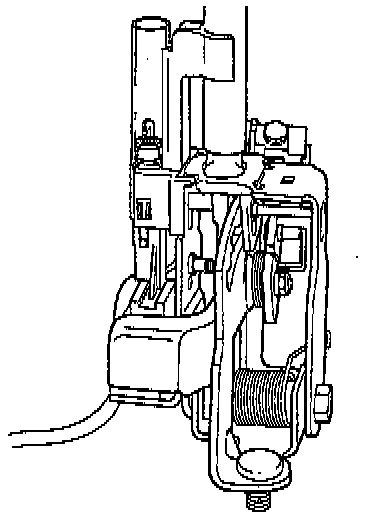
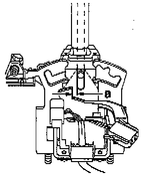
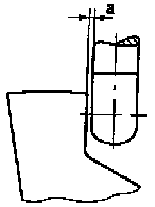
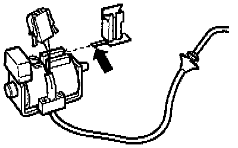

Disassembly\Assembly

COMPONENT NOTES AND INFORMATION
NOTE: Selector lever must be removed to replace individual parts, refer to Replacement. Service and Repair
1 Selector lever
- Assembling, refer to Fig. 1, below.
2 Indicator lighting
- Securing indicator lighting connector, refer to Fig. 4, below.
3 Spring
4 Pressure rod
- Grease in area of sliding surfaces
5 Guide sleeve
- Install after installing pressure rod
6 Set screw
- Always replace
- To remove set screw, remove Shift Lock Solenoid and lighting.
Clamp set screw in vice and loosen by turning selector lever.
- Install with suitable locking fluid
7 Shift Lock Solenoid
- Adjusting, refer to Fig. 2, below.
- Functional check, refer to Fig. 3, below.
- Can be checked using OBD in vehicle.
8 Screw
- Tighten to: 3 Nm (27 inch lb)
- Quantity used: 2
- Install with suitable locking fluid
9 Nut
- Tighten to: 5 Nm (44 inch lb)
- Always replace
10 Washer
11 Locking lever For ignition key removal lock
- Adjust together with locking cable, refer to Starting and Charging.
12 Spring
- Hook into hole of detent plate
13 Retainer For locking cable
- Removing and installing locking cable, refer to Starting and Charging
- Adjusting locking cable, refer to Starting and Charging.
14 Spring
- For locking pin
15 Detent plate
- Assemble selector lever before fitting in selector lever housing, refer to Fig. 1, below.
16 Locking pin
- With bracket
17 Hex socket-head screw,
- Tighten to: 6 Nm (53 inch lb)
18 Screw
- Tighten to: 6 Nm (53 inch lb)
19 Washer
20 Spring
- Insert in selector lever together with lever -Item 21-
21 Lever
22 Bushing
- For locking in selector lever position "N" or "P"
- Adjusting, refer to Fig. 2, below.
23 Nut
- Tighten to: 10 Nm (7 ft lb)
- Always replace
24 Bolt
- Grease shank

Fig. 1 Selector lever, assembling before installing
- Adjust Shift Lock Solenoid and carry out functional check, refer to Fig. 3, below before installing selector lever in selector lever housing.
- Install set screw and Shift Lock Solenoid screws with suitable locking fluid.

Fig. 2 Shift Lock Solenoid, adjusting
- Adjust solenoid by sliding in elongated holes so that clearance -a- of 0.3 mm exists between pressure rod and lever, refer to Fig. 3, below.

Fig. 3 Clearance between pressure rod and lever, adjusting
- Dimension a = 0.3 mm
- Functional check
Shift selector lever into "P" and supply solenoid with 12 V.
It must not be possible to shift selector lever into a driving gear
Interrupt solenoid operation; it must be possible to shift into driving gears.
Pressure rod must not catch on lever.
Shift selector lever into "N" and check as in "P".
After adjusting clearance, install assembled selector lever.

Fig. 4 Indicator lighting connector, securing
- Push bracket with lug (arrow) on until lug engages.
- Seat connector cable into bracket and slide connector onto bracket.